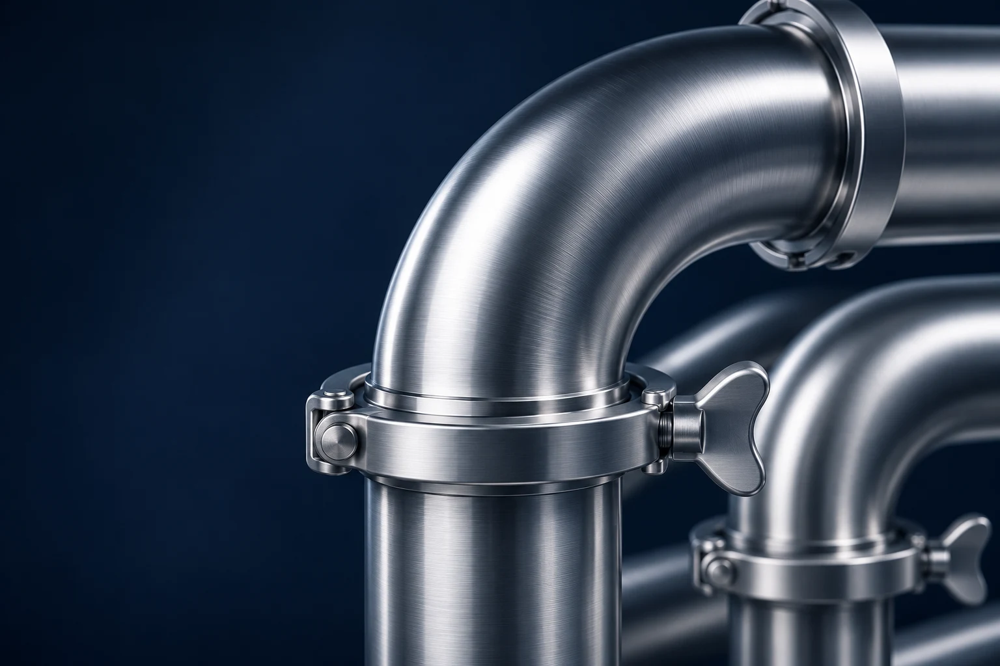
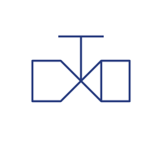
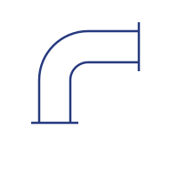
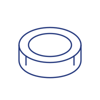
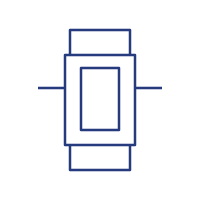
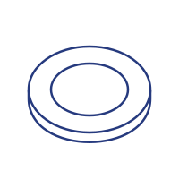
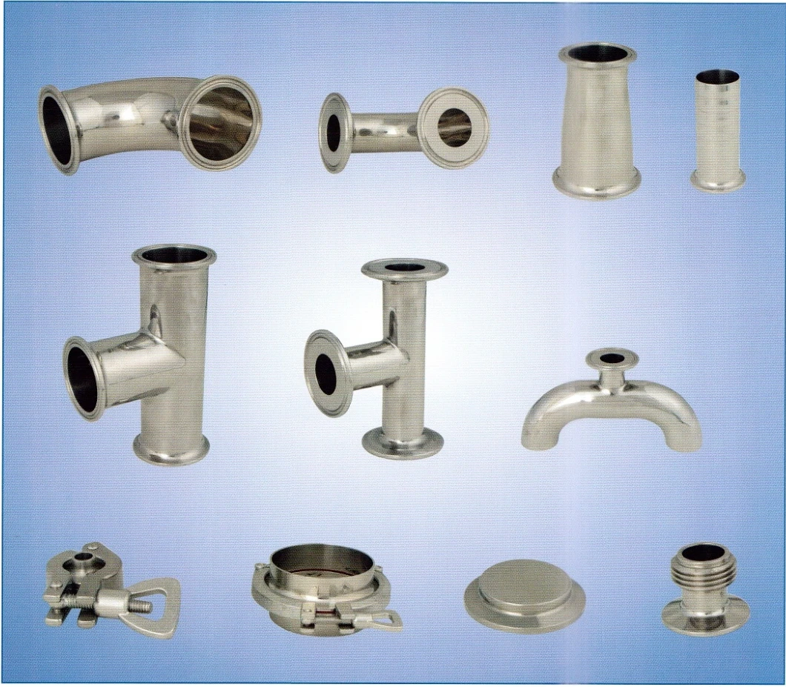

COMPONENTS. FABRICATION. SERVICE.
부품의 연결에서,
현장의 필요까지.
쎄니타리 배관 부속과 밸브 유통,
용접·주문 제작과 수리를 함께하는 대원쎄니타리.
DAEWON SANITARY / SEOULAI 콘셉트 이미지 · 실제 제품 및 회사 시설 사진이 아닙니다.
PRODUCT FINDER
어떤 제품을 찾으시나요?
OUR PRODUCTS
필요한 제품을, 더 쉽게.
제품군을 먼저 선택하고, 현장에 필요한 규격과 연결 방식을 확인하세요.
01

밸브↗
VALVES02
배관 부속↗
SANITARY FITTINGS03
연결 부속↗
CONNECTIONS04
장치류↗
EQUIPMENT05
패킹·부속품↗
ACCESSORIES과거 카탈로그 수록 품목을 탐색할 수 있습니다. 현재 취급 여부와 기술 사양은 별도 확인이 필요합니다.
FROM OUR CATALOG
사진과 도면으로 보는
쎄니타리 부품.
제공된 과거 카탈로그의 실제 수록 사진입니다.
현재 취급 품목과 제품 형상은 별도 확인이 필요합니다.

WHAT WE DO
공급부터 제작, 수리까지.
부품이 필요한 순간부터
사용 중 정비가 필요한 순간까지.
TECHNICAL RESOURCES
제품 선택에 필요한 자료
도면과 규격표, 카탈로그를 한곳에서 확인하는 자료실입니다.
LET’S TALK ABOUT YOUR REQUIREMENTS
필요한 부품부터,
제작과 수리까지.
제품명, 규격 또는 도면을 기준으로 문의 내용을 정리해 보세요.